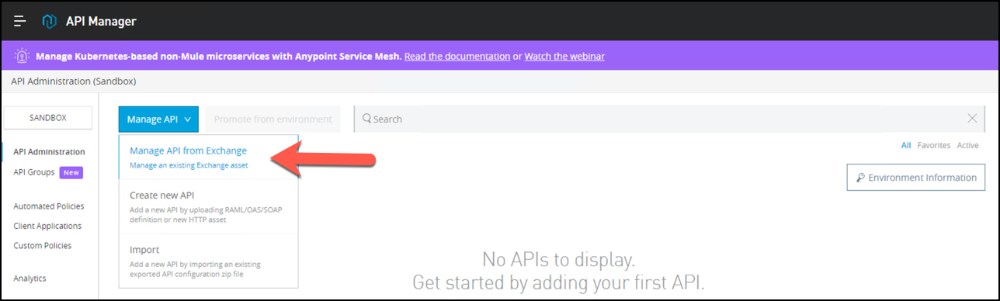
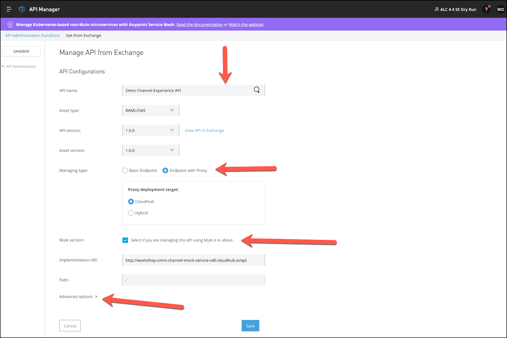
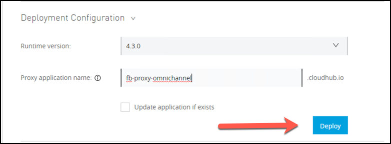
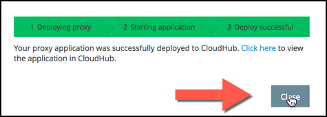
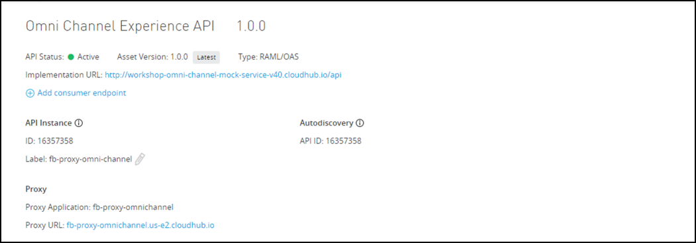

Para esta práctica de laboratorio, configuraremos la API como un proxy para la implementación simulada de la API Omni Channel de Mythical Corporation. La API está disponible como una API Restful HTTP accesible a través de la URL base http://workshop-omni-channel-mock-service-v40.cloudhub.io/api.
Para crear el proxy vamos a obtener la Definición de API de Exchange.
- Ahora configuremos una puerta de enlace de proxy API para esta API. De vuelta en la página de administración de API, haga clic en Manage API y seleccione Manage API From Exchange

- Configurar la API con la siguiente información:
- API NameI:
Experiencia Omni Canal.Observe que cuando comienza a escribir el nombre, el campo se completa automáticamente.
- Asset Type: seleccione de la lista desplegable
RAML/OAS.
- API Version: seleccione de la lista desplegable
1.0.0.
- Asset Version: seleccione de la lista desplegable
1.0.0.
- Managing type: seleccione
Endpoint with proxy
- Proxy Deployment target: elija
Cloudhub
- Mule Version: marque la casilla. Vamos a desplegar un Mule 4 Gateway.
- Implementation URI:
http://workshop-omni-channel-mock-service-v40.cloudhub.io/api
- Path:
/

- Presione Advanced Options y configure:
- Proxy application name:
<nombre de usuario> -proxy-omni-channel. Este parámetro se utilizará para identificar la API en el Administrador de API.
- Presione Save
Después de presionar Save , aparecerá la sección de configuración de implementación para implementar el proxy.

- Configure con la siguiente información:
- Runtime Version: Seleccione
4.3.0
- Proxy application Name:
<nombre de usuario> -proxy-omni-channel. Esta propiedad definirá la URL del proxy y el nombre de la aplicación Mule en Runtime Manager.
- Presione el botón Deploy.
- Debería ver el verde Implementación exitosa en la barra de estado.
- Haga clic en Close.

- Una vez implementada, en la parte superior de la página verá el estado de la API. Debe ser verde con una bola verde al lado, como se muestra a continuación. Esto indica que su API se implementó correctamente y ahora se está administrando.
